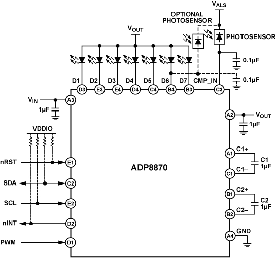
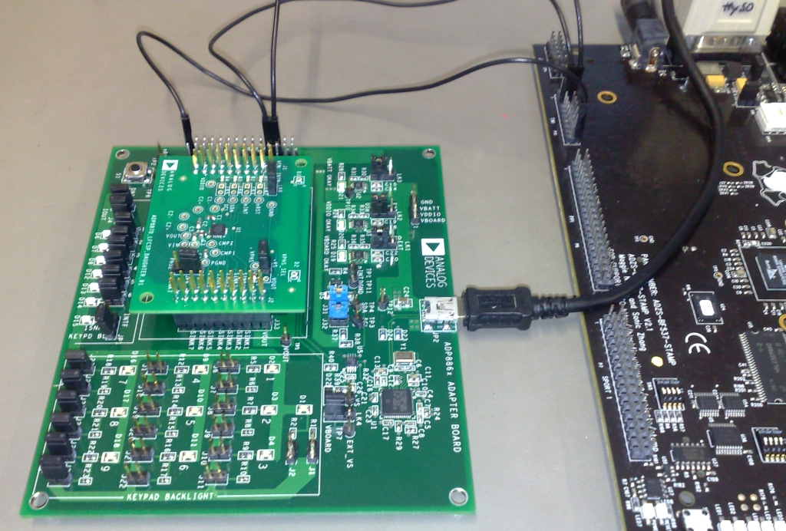

ADP8870 Back-light LED Linux Driver¶
Supported Devices¶
Evaluation Boards¶
Description¶

Configuration¶
Software configurable features¶
Backlight:
Ambient Light Sensor Support (ALS)
Five programmable ambient light sensing zones for optimal backlight power savings
PWM input can be used for Content Adaptive Brightness Control (CABC) of any, or all, of the LEDs (PWM input scales the LED output current)
Configurable Fade On/Off times
Configurable Fade Law functions
Configurable ALS filter settings
Configurable Brightness/Intensity in 128 steps
LED:
Up to 7 LEDs configurable
Configurable Fade On/Off times
LED Blink On/Off times
Configurable Fade Law functions
Configurable Brightness/Intensity in 128 steps from [0…255]
Source Code¶
Status¶
| Source | Mainlined? |
|---|---|
| git | Yes |
Files¶
| Function | File |
|---|---|
| driver | drivers/video/backlight/adp8870_bl.c |
| include | include/linux/i2c/adp8870.h |
Instructions / Theory of operation¶
Backlight control¶
With the ADP8870 driver installed, you will find sysfs files in the /sys/class/backlight/adp8870_bl/ directory. You will be able to query and set the current screen brightness:
; **brightness** : get/set screen brightness (an integer between 0 and 126) writing 127 will enable the Ambient Light Sensor.
; **actual_brightness** : reading from this file will query the HW to get real brightness value.
; **max_brightness** : the maximum brightness value.
; **bl_power** : Current FB Power mode (0: full on, 1..3: power saving modes; 4: full off).
ADP8870 Specific Backlight controls¶
The ADP8870 features 5 individually programmable Ambient Light Sensing Zones:
; **l1_daylight_dim** : Ambient Light Zone Daylight: Backlight DIM Intensity (an integer between 0 and 127, typically set to 0).
; **l1_daylight_max** : Ambient Light Zone Daylight: Backlight Intensity (an integer between 0 and 127).
; **l2_bright_dim** : Ambient Light Zone Bright: Backlight DIM Intensity (an integer between 0 and 127, typically set to 0)
; **l2_bright_max** : Ambient Light Zone Bright: Backlight Intensity (an integer between 0 and 127)
; **l3_office_dim** : Ambient Light Zone Office: Backlight DIM Intensity (an integer between 0 and 127, typically set to 0)
; **l3_office_max** : Ambient Light Zone Office: Backlight Intensity (an integer between 0 and 127)
; **l4_indoor_dim** : Ambient Light Zone Indoor: Backlight DIM Intensity (an integer between 0 and 127, typically set to 0)
; **l4_indoor_max** : Ambient Light Zone Indoor: Backlight Intensity (an integer between 0 and 127)
; **l5_dark_dim** : Ambient Light Zone Dark: Backlight DIM Intensity (an integer between 0 and 127, typically set to 0)
; **l5_dark_max** : Ambient Light Zone Dark: Backlight Intensity (an integer between 0 and 127)
; **ambient_light_level** : Get conversion value of the first light sensor. This value is updated every 80 ms (when the light sensor is enabled). Returns integer between 0 (dark) and 8000 (max ambient brightness)
; **ambient_light_zone** : Get/Set current Ambient Light Zone. Reading returns integer between 1..5 (1 = Daylight, 2 = bright, ..., 5 = dark). Writing a value between 1..5 forces the Backlight controller to enter the corresponding Ambient Light Zone. Writing 0 returns to normal operation.
LED handling under Linux¶
LEDs not assigned to the Backlight are optionally exposed to the Linux LEDs Class. The LED class allows control of LEDs from userspace. LEDs appear in /sys/class/leds/. The brightness file will set the brightness of the LED (taking a value 0-255). The LEDS class also introduces the optional concept of an LED trigger. A trigger is a kernel based source of led events, such as ide-disk or backlight control. For more information read linux/Documentaion/leds-class.txt
; **brightness** : get/set LED brightness (an integer between 0 and 255)
; **max_brightness** : the maximum brightness value.
Example platform device initialization¶
For compile time configuration, it’s common Linux practice to keep board- and application-specific configuration out of the main driver file, instead putting it into the board support file.
Note
platform_data: Platform data specific to the ADP8870 device. Includes what LEDs are available, feature selections and default initialization.
## include <linux/i2c/adp8870.h>
Declaring I2C devices¶
Unlike PCI or USB devices, I2C devices are not enumerated at the hardware level. Instead, the software must know which devices are connected on each I2C bus segment, and what address these devices are using. For this reason, the kernel code must instantiate I2C devices explicitly. There are different ways to achieve this, depending on the context and requirements. However the most common method is to declare the I2C devices by bus number.
This method is appropriate when the I2C bus is a system bus, as in many embedded systems, wherein each I2C bus has a number which is known in advance. It is thus possible to pre-declare the I2C devices that inhabit this bus. This is done with an array of struct i2c_board_info, which is registered by calling i2c_register_board_info().
So, to enable such a driver one need only edit the board support file by adding an appropriate entry to i2c_board_info.
For more information see: Documentation/i2c/instantiating-devices.rst
static struct i2c_board_info __initdata bfin_i2c_board_info[] = {
## if defined(CONFIG_BACKLIGHT_ADP8870) || defined(CONFIG_BACKLIGHT_ADP8870_MODULE)
{
I2C_BOARD_INFO("adp8870", 0x2B),
.platform_data = (void *)&adp8870_pdata,
},
## endif
}
Adding Linux driver support¶
Configure kernel with “make menuconfig” (alternatively use “make xconfig” or “make qconfig”)
Note
The ADP8870 Backlight driver depends on I2C. It therefore requires selected I2C support to show up during kernel configuration.
Device Drivers --->
Graphics support --->
[*] Backlight & LCD device support --->
<*> Lowlevel Backlight controls
<M> Backlight Driver for ADP8870 using WLED
Hardware configuration¶
There is no dedicated Blackfin STAMP evaluation board for the ADP8870. During test and driver development we used the ADP8870 Evaluation Mother/Daughter Board.
{kind=link}
It can be easily wired to the Blackfin STAMP TWI/I2C header.
| BF537-STAMP (P10) TWI/I2C header | ADP886x Adaptor Board (J30) | |
|---|---|---|
| PIN | Function | PIN/Function |
| 5 | SCL | SCL |
| 6 | SDA | SDA |
| 20 | GND | GND |
Leave J31 and J32 open (these jumpers connect the SCL and SDA to the cypress chip used as USB bridge). Then apply your own SCL, SDA, and GND to the big J30 connector on the left edge of the board.
The ADP8870 chip still needs Vin (to power the chip), Vddio (to pull nRST and nINT high), and Vboard (to power the ALS sensor on the daughter card). These are provided through the USB port and then get regulated down (Vin becomes 3.6V, Vddio is 2.7V, and Vboard is around 4 V). So even though you won’t be using the USB to program the part, it would still be easiest to plug the board into a USB port just to power Vin, Vddio, and Vboard. Of course, if you want, you can power these supplies from a lab bench power supply. In that case, move LK1, 2, and 3 to the “EXT” position and apply the signals to J29.
Driver testing¶
Driver compiled as a module¶
ADP8870 driver is build as a module
root:/> **modprobe adp8870_bl**
adp8870_bl 0-002b: Rev.0 Backlight
Registered led device: adp8870-led7
root:/>
Example Backlight usage¶
root:/> cd sys/class/backlight/adp8870_bl/
root:/sys/devices/platform/i2c-bfin-twi.0/i2c-adapter/i2c-0/0-002b/backlight/adp8870_bl> ls -l
-r--r--r-- 1 root root 4096 Jan 1 03:29 actual_brightness
-r--r--r-- 1 root root 4096 Jan 1 03:29 ambient_light_level
-rw-rw-r-- 1 root root 4096 Jan 1 03:29 ambient_light_zone
-rw-r--r-- 1 root root 4096 Jan 1 03:31 bl_power
-rw-r--r-- 1 root root 4096 Jan 1 04:55 brightness
lrwxrwxrwx 1 root root 0 Jan 1 03:29 device -> ../../../0-002b
-rw-rw-r-- 1 root root 4096 Jan 1 03:29 l1_daylight_dim
-rw-rw-r-- 1 root root 4096 Jan 1 03:29 l1_daylight_max
-rw-rw-r-- 1 root root 4096 Jan 1 03:30 l2_bright_dim
-rw-rw-r-- 1 root root 4096 Jan 1 03:29 l2_bright_max
-rw-rw-r-- 1 root root 4096 Jan 1 03:30 l3_office_dim
-rw-rw-r-- 1 root root 4096 Jan 1 03:29 l3_office_max
-rw-rw-r-- 1 root root 4096 Jan 1 03:31 l4_indoor_dim
-rw-rw-r-- 1 root root 4096 Jan 1 03:29 l4_indoor_max
-rw-rw-r-- 1 root root 4096 Jan 1 03:31 l5_dark_dim
-rw-rw-r-- 1 root root 4096 Jan 1 03:29 l5_dark_max
-r--r--r-- 1 root root 4096 Jan 1 03:29 max_brightness
drwxr-xr-x 2 root root 0 Jan 1 03:29 power
lrwxrwxrwx 1 root root 0 Jan 1 03:29 subsystem -> ../../../../../../../../class/backlight
-rw-r--r-- 1 root root 4096 Jan 1 03:29 uevent
root:/sys/devices/platform/i2c-bfin-twi.0/i2c-adapter/i2c-0/0-002b/backlight/adp8870_bl>
Set Backlight Intensity¶
root:/sys/devices/platform/i2c-bfin-twi.0/i2c-adapter/i2c-0/0-002b/backlight/adp8870_bl> **echo 42 > brightness**
Query Backlight Intensity¶
root:/sys/devices/platform/i2c-bfin-twi.0/i2c-adapter/i2c-0/0-002b/backlight/adp8870_bl> **cat brightness**
42
Enable Ambient Light Sensing Feature¶
root:/sys/devices/platform/i2c-bfin-twi.0/i2c-adapter/i2c-0/0-002b/backlight/adp8870_bl> **echo 127 > brightness**
Query Ambient Light Level¶
root:/sys/devices/platform/i2c-bfin-twi.0/i2c-adapter/i2c-0/0-002b/backlight/adp8870_bl> **cat ambient_light_level**
1276
Query Ambient Light Zone¶
root:/sys/devices/platform/i2c-bfin-twi.0/i2c-adapter/i2c-0/0-002b/backlight/adp8870_bl> **cat ambient_light_zone**
4
Adjust Intensity for Ambient Light Zone 4 (indoor)¶
root:/sys/devices/platform/i2c-bfin-twi.0/i2c-adapter/i2c-0/0-002b/backlight/adp8870_bl> **echo 22 > l4_indoor_max**
22
root:/sys/devices/platform/i2c-bfin-twi.0/i2c-adapter/i2c-0/0-002b/backlight/adp8870_bl> **cat l4_indoor_max**
22
Example LED usage¶
root:/> cd /sys/class/leds/adp8870-led7/
root:/sys/devices/platform/i2c-bfin-twi.0/i2c-adapter/i2c-0/0-002b/leds/adp8870-led7> ls -l
-rw-r--r-- 1 root root 4096 Jan 1 03:29 brightness
lrwxrwxrwx 1 root root 0 Jan 1 03:29 device -> ../../../0-002b
-r--r--r-- 1 root root 4096 Jan 1 03:29 max_brightness
drwxr-xr-x 2 root root 0 Jan 1 03:29 power
lrwxrwxrwx 1 root root 0 Jan 1 03:29 subsystem -> ../../../../../../../../class/leds
Set Intensity¶
root:/sys/devices/platform/i2c-bfin-twi.0/i2c-adapter/i2c-0/0-002b/leds/adp8870-led7>**echo 99 > brightness**
Turn LED OFF¶
root:/sys/devices/platform/i2c-bfin-twi.0/i2c-adapter/i2c-0/0-002b/leds/adp8870-led7> **echo 0 > brightness**
Query Max Brightness¶
root:/sys/devices/platform/i2c-bfin-twi.0/i2c-adapter/i2c-0/0-002b/leds/adp8870-led7> **cat max_brightness**
255
root:/sys/devices/platform/i2c-bfin-twi.0/i2c-adapter/i2c-0/0-002b/leds/adp8870-led7>